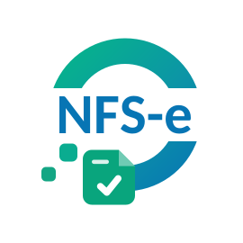

Encerra a DMS de serviços prestados
A declaração mensal das notas emitidas pela empresa, encerrada no portal da prefeitura, com a soma conferida antes.
Prévia, ainda não é pública. Os itens a confirmar estão em decisão.
Oxygênio DMS · Oxygênio Sistema de Automação de Obrigações Fiscais Municipal
Aplicativo para Windows que faz o fechamento mensal do ISS no portal da prefeitura, empresa por empresa: encerra a DMS (a declaração mensal do ISS), gera a guia, baixa os XML, emite a CND e, rodado de novo o mesmo mês, mostra o que mudou desde o fechamento anterior. Quando os números não batem, ele para e pede para você conferir.
Você escolhe a competência e as empresas. Ele faz o resto, um passo de cada vez, e mostra cada um na tela.
A declaração mensal das notas emitidas pela empresa, encerrada no portal da prefeitura, com a soma conferida antes.
A declaração das notas que a empresa recebeu, com o ISS retido quando é o caso.
A guia do mês sai do portal e vai para a pasta da empresa, pronta para mandar ao cliente.
As notas da competência, normais e canceladas, com o PDF de cada uma gerado a partir do XML.
A certidão negativa de débitos da empresa, salva junto dos outros arquivos do mês.
Cada fechamento é guardado. Quando a mesma empresa e competência rodam de novo, o aplicativo compara com o fechamento anterior e aponta o que mudou.
O recurso que diferencia o Oxygênio DMS de um fechamento feito à mão.
Cada execução grava um retrato da competência: as notas, os valores, o que foi encerrado. Quando a mesma empresa e a mesma competência rodam de novo, o aplicativo compara com o retrato anterior e lista a diferença, nota por nota. É assim que uma nota cancelada depois do fechamento, ou uma que apareceu atrasada, não passa despercebida.
Três passos. O primeiro, só uma vez.
O Oxygênio DMS é instalado no computador do escritório, com uma licença para cada computador. Você cadastra as empresas que fecham DMS e, se quiser, marca para o aplicativo lembrar o login do escritório no portal da prefeitura.
Marque as empresas do mês e clique em Executar. O painel Progresso mostra cada passo de cada empresa enquanto acontece: nada é feito em silêncio.
No fim, um relatório por competência: o que foi feito, o que não foi e por quê, e o que mudou desde o fechamento anterior. Os arquivos ficam na pasta de cada empresa.
Na dúvida, o aplicativo não encerra. Ele avisa e pede para conferir e encerrar à mão no portal.
Só depois que você escolhe a competência e as empresas e clica em Executar. E só encerra quando os números batem: na dúvida, ele para e pede para você conferir no portal.
Hoje o Oxygênio DMS trabalha para ampliar as prefeituras atendidas. Diga qual é a sua no WhatsApp: a gente responde se já atende.
Cada fechamento fica guardado. Quando a mesma empresa e competência rodam de novo, o aplicativo compara com o fechamento anterior e lista nota que entrou, sumiu, foi cancelada ou mudou de valor.
No computador do escritório, numa pasta por empresa e competência: guia, XML, PDF, CND e o relatório. Os dados das empresas vão só ao portal da prefeitura. A exceção é o botão Atualizar razão social: ele manda o número do CNPJ a serviços públicos de consulta.
Por enquanto o Oxygênio DMS é um aplicativo de computador, para Windows. O emissor de NFS-e da Oxygênio, a Emissão Nacional, esse é pelo navegador.
Chame no WhatsApp e diga quantas empresas fecham DMS no escritório e em quantos computadores o aplicativo vai rodar. Você recebe o instalador e uma licença para cada computador, cadastra as empresas e roda a primeira competência acompanhando o painel.

Emissor de NFS-e para escritórios de contabilidade: pelo navegador, com o login do Portal Nacional de cada cliente, sem certificado digital.
Chame no WhatsApp, diga quantas empresas fecham DMS e qual é a prefeitura. A gente combina o acesso.
Chamar no WhatsApp (44) 99116-0421